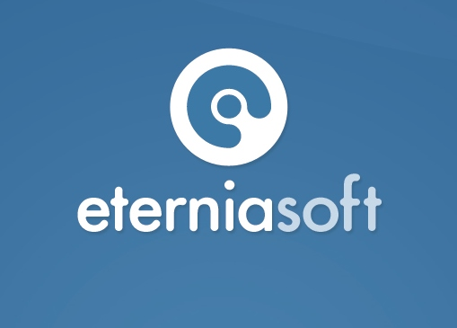

Sperant es un sistema desarrollado por EterniaSoft orientado a automatizar las operaciones de una inmobiliaria. Facilita el registro y seguimiento de clientes, desde que llegan hasta que independizan su propiedad.
Así mismo permite una eficiente gestión de sus proyectos, unidades, vendedores, contratos y procesos de adquisición. Es una herramienta completa, con vistas muy sencillas de usar, y reportes que permitirán aprovechar al máximo toda la información ingresada en el sistema.
Sperant tiene además interfases con Sistema 10, el ERP más reconocido en la industria de construcción.
